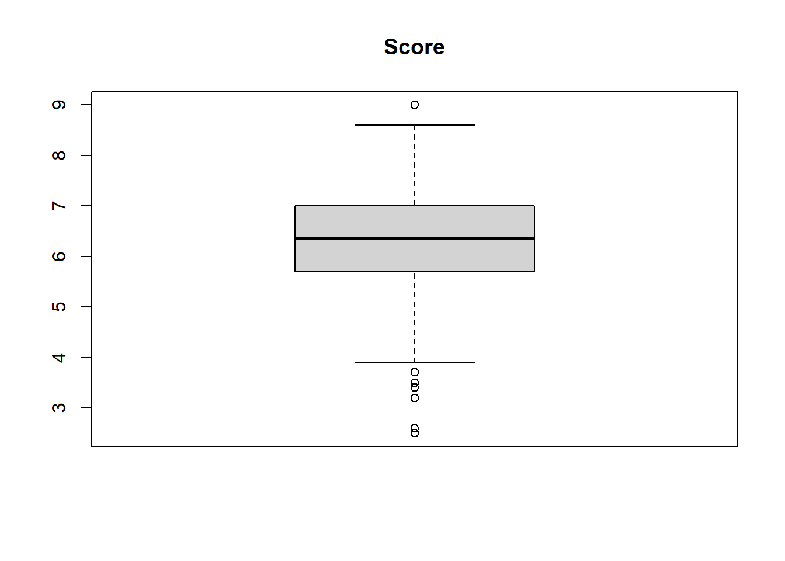
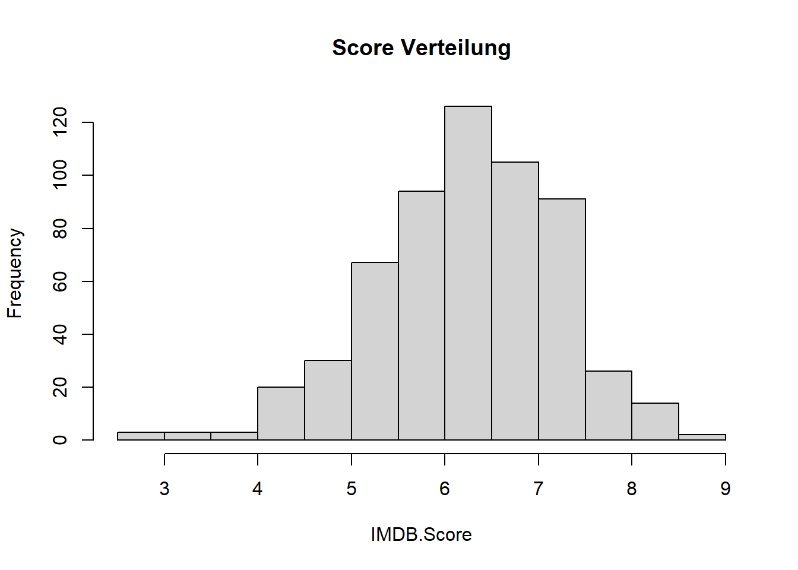
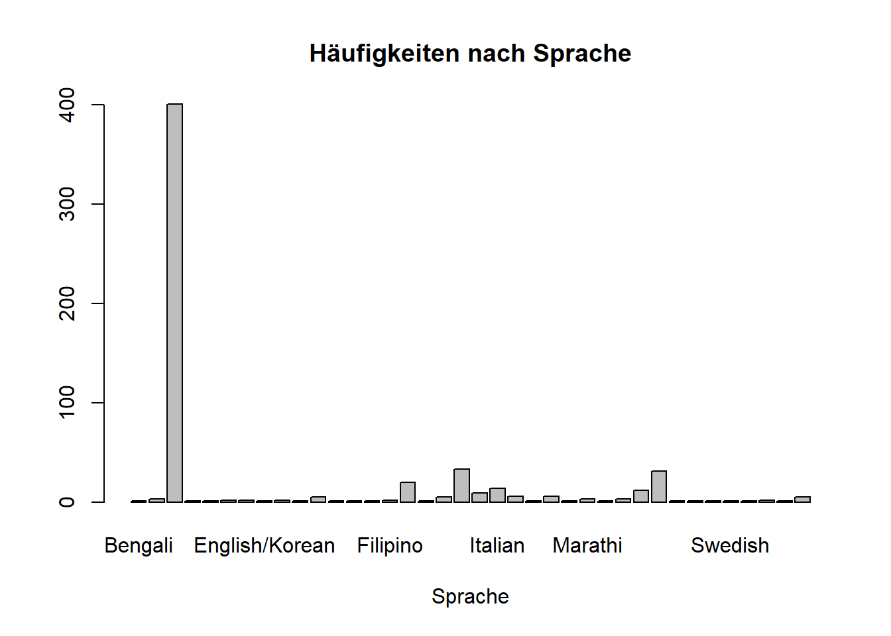

##Arbeitsverzeichnis checken
getwd()[1] "C:/Users/antje/Documents/studium PUK/Master-Publizistik/STUDIENASSISTENZ/Test Tutorial"In diesem Tutoriual lernen Sie einige grundlegende Verfahren zur Datenverarbeitung in R kennen. Sie lernen, wie Sie
Zunächst überprüfen wir mit “getwd()”, unter welchem Pfad unser Arbeitsverzeichnis abgelegt ist. Dies ist der Ordner, in den R alle in diesem Projekt erstellten Dokumente ablegt, und aus dem es auch Dokumente einliest. Alle Skripte und Datensätze, mit denen wir arbeiten wollen, sollten in diesem Ordner abgelegt sein. Wenn wir ein Projekt angelegt haben, wird dieses automatisch als Working Directory (Arbeitsverzeichnis) angelegt.
##Arbeitsverzeichnis checken
getwd()[1] "C:/Users/antje/Documents/studium PUK/Master-Publizistik/STUDIENASSISTENZ/Test Tutorial"Wollen wir einen anderen Ordner als Arbeitsverzeichnis festlegen, dann können wir das am besten händisch unter: Session -> Set Working Directory -> Choose Directory.
Oder wir verwenden die Funktion “setwd()” und geben in den Klammern den genauen Pfad zum gewünschten Ordner an.
Im Folgenden benötigen wir zwei R-Pakete, die nicht bereits in der Basisversion enthalten sind. Wir können diese mit dem folgenden Code installieren:
##Pakete installieren
if (!require("tidyverse")) {install.packages("tidyverse")}Lade nötiges Paket: tidyverseWarning: Paket 'ggplot2' wurde unter R Version 4.4.3 erstellt── Attaching core tidyverse packages ──────────────────────── tidyverse 2.0.0 ──
✔ dplyr 1.1.4 ✔ readr 2.1.5
✔ forcats 1.0.0 ✔ stringr 1.5.1
✔ ggplot2 4.0.1 ✔ tibble 3.2.1
✔ lubridate 1.9.3 ✔ tidyr 1.3.1
✔ purrr 1.0.2 ── Conflicts ────────────────────────────────────────── tidyverse_conflicts() ──
✖ dplyr::filter() masks stats::filter()
✖ dplyr::lag() masks stats::lag()
ℹ Use the conflicted package (<http://conflicted.r-lib.org/>) to force all conflicts to become errorsif (!require("rmarkdown")) {install.packages("rmarkdown")}Lade nötiges Paket: rmarkdownWarning: Paket 'rmarkdown' wurde unter R Version 4.4.3 erstelltAlternativ können wir im Bereich rechts unten “Packages -> install” klicken. Dann öffnet sich ein Fenster, in das wir den Namen des Pakets eintippen können. Klicken Sie dann “Install”, und das Paket wird installiert. Wenn Sie auf “Update” klicken, prüft R Studio, ob es Updates für installierte Pakete gibt, und fragt sie, ob es diese installieren soll. Pakete muss man nur einmal installieren und gelegentlich updaten.
Jedes Mal, wenn wir ein Paket in einer Sitzung für ein Projekt nutzen wollen, müssen wir es zunächst laden:
##Pakete laden
library(tidyverse)
library(rmarkdown)Mit der folgenden Funktion können wir einen Datensatz in Form einer csv-Datei (kommagetrennte Werte) einlesen. Wir weisen diesen direkt einem Objekt mit dem Namen “netflix_films” zu.
Wichtig!: Der Datensatz muss in unserem Arbeitsverzeichnis liegen, sonst funktioniert es nicht.
netflix_films <- read.csv("NetflixOriginals.csv")Dieser Datensatz besteht aus allen Netflix-Originalfilmen, die zum Stichtag des 1. Juni 2021 veröffentlicht wurden. Darüber hinaus enthält er auch alle Netflix-Dokumentarfilme und -Specials. Mehr Infos zum Datensatz finden Sie hier: https://www.kaggle.com/datasets/luiscorter/netflix-original-films-imdb-scores
Geben wir einfach den Namen des Datensatzes an, wird er uns komplett in der Konsole ausgegeben. Das ist insbesondere für große Datensätze, wie den Beispieldatensatz, eher unpraktisch.
netflix_films #zeigt den gesamten Datensatz in der Konsole an; unpraktisch für große DatensätzeMit dem Befehl “View()” öffnen wir den Datensatz in einem separaten Tabellenfenster, in dem die Daten in tabellarischer Form angezeigt werden. Dies ist praktisch, um sich schnell einen Überblick über die Daten zu verschaffen.
View(netflix_films) #zeigt den Datensatz in Tabellenform anMit dem Befehl “class()” können wir herausfinden, zu welcher Klasse (=Datentyp) das Objekt “netflix_films” gehört. In unserem Fall ist es “data.frame”. Ein Dataframe ist ein bestimmtes Format, um Daten zu speichern. Es beinhaltet immer die Fälle (=Beobachtungen) in den Zeilen und die Variablen (=Beobachtungswerte) in den Spalten.
class(netflix_films) #zeigt die Klasse des Objekts an: data.frame[1] "data.frame"Mit dem Befehl glimpse() bekommen wir einen Überblick über die Spalten (=Variablen) im Datensatz mit nützlichen Informationen wie Spaltennamen, Datentyp, Anzahl der fehlenden Werte usw. Wir sehen, dass wir vier Variablen vom Typ “Character” (chr) haben, d.h. sie werden als Zeichenkette gespeichert: Title, Genre, Premiere, Language. Zwei Variablen sind numerisch, wobei “Runtime” als ganze Zahl (int=integer) gespeichert wird, die Variable “IMDB.Score” als Dezimalzahl (dbl=double).
glimpse(netflix_films) #gibt einen Überblick über die Spalten in unserem DatensatzRows: 584
Columns: 6
$ Title <chr> "Enter the Anime", "Dark Forces", "The App", "The Open Hous…
$ Genre <chr> "Documentary", "Thriller", "Science fiction/Drama", "Horror…
$ Premiere <chr> "August 5, 2019", "August 21, 2020", "December 26, 2019", "…
$ Runtime <int> 58, 81, 79, 94, 90, 147, 112, 149, 73, 139, 58, 112, 97, 10…
$ IMDB.Score <dbl> 2.5, 2.6, 2.6, 3.2, 3.4, 3.5, 3.7, 3.7, 3.9, 4.1, 4.1, 4.1,…
$ Language <chr> "English/Japanese", "Spanish", "Italian", "English", "Hindi…Der Befehl “head()” zeigt die ersten sechs Zeilen des Datensatzes an.
head(netflix_films) # zeigt die ersten sechs Zeilen des Datensatzes an Title Genre Premiere Runtime IMDB.Score
1 Enter the Anime Documentary August 5, 2019 58 2.5
2 Dark Forces Thriller August 21, 2020 81 2.6
3 The App Science fiction/Drama December 26, 2019 79 2.6
4 The Open House Horror thriller January 19, 2018 94 3.2
5 Kaali Khuhi Mystery October 30, 2020 90 3.4
6 Drive Action November 1, 2019 147 3.5
Language
1 English/Japanese
2 Spanish
3 Italian
4 English
5 Hindi
6 HindiMit “dim()” erhalten wir zwei Zahlen in der Ausgabe, wobei die erste die Anzahl der Zeilen und die zweite die Anzahl der Spalten im Datensatz ist. Wir erfahren also, wie viele Beobachtungen (=Zeilen) und Variablen (=Spalten) unser Datensatz hat.
dim(netflix_films) #wie viele Zeilen (=Fälle, Beobachtungen) und Spalten (=Variablen) hat mein Datensatz?[1] 584 6Als nächstes wollen wir uns einige deskriptive statistische Werte für die Daten ausgeben lassen. Zunächst schauen wir uns die Variable “IMDB.Score” an. Wenn wir auf eine konkrete Variable (=Spalte) im Datensatz zugreifen wollen, können wir das, indem wir zunächst den Namen des Datensatzes angeben, dann ein Dollarzeichen und schließlich den Namen der Variable, die uns interessiert. Der Befehl hat also die folgende Struktur: Name_Datensatz$Name_Variable
netflix_films$IMDB.Score #zeigt alle Werte für die Variable IMDB.Score an [1] 2.5 2.6 2.6 3.2 3.4 3.5 3.7 3.7 3.9 4.1 4.1 4.1 4.1 4.2 4.2 4.3 4.3 4.3
[19] 4.3 4.4 4.4 4.4 4.4 4.4 4.4 4.5 4.5 4.5 4.5 4.6 4.6 4.6 4.6 4.6 4.6 4.6
[37] 4.6 4.7 4.7 4.7 4.7 4.7 4.7 4.8 4.8 4.8 4.8 4.8 4.8 4.8 4.9 4.9 4.9 4.9
[55] 5.0 5.0 5.0 5.0 5.0 5.1 5.1 5.1 5.1 5.1 5.1 5.2 5.2 5.2 5.2 5.2 5.2 5.2
[73] 5.2 5.2 5.2 5.2 5.2 5.2 5.2 5.2 5.2 5.2 5.2 5.2 5.3 5.3 5.3 5.3 5.3 5.3
[91] 5.3 5.3 5.3 5.3 5.4 5.4 5.4 5.4 5.4 5.4 5.4 5.4 5.4 5.4 5.4 5.4 5.4 5.5
[109] 5.5 5.5 5.5 5.5 5.5 5.5 5.5 5.5 5.5 5.5 5.5 5.5 5.5 5.5 5.5 5.5 5.5 5.5
[127] 5.6 5.6 5.6 5.6 5.6 5.6 5.6 5.6 5.6 5.6 5.6 5.6 5.6 5.6 5.6 5.7 5.7 5.7
[145] 5.7 5.7 5.7 5.7 5.7 5.7 5.7 5.7 5.7 5.7 5.7 5.7 5.7 5.7 5.7 5.7 5.7 5.8
[163] 5.8 5.8 5.8 5.8 5.8 5.8 5.8 5.8 5.8 5.8 5.8 5.8 5.8 5.8 5.8 5.8 5.8 5.8
[181] 5.8 5.8 5.8 5.8 5.8 5.8 5.8 5.8 5.8 5.8 5.8 5.9 5.9 5.9 5.9 5.9 5.9 5.9
[199] 5.9 5.9 5.9 5.9 5.9 5.9 5.9 5.9 5.9 6.0 6.0 6.0 6.0 6.0 6.0 6.0 6.0 6.0
[217] 6.0 6.0 6.0 6.0 6.1 6.1 6.1 6.1 6.1 6.1 6.1 6.1 6.1 6.1 6.1 6.1 6.1 6.1
[235] 6.1 6.1 6.1 6.1 6.1 6.1 6.1 6.1 6.1 6.1 6.2 6.2 6.2 6.2 6.2 6.2 6.2 6.2
[253] 6.2 6.2 6.2 6.2 6.2 6.2 6.2 6.2 6.2 6.2 6.3 6.3 6.3 6.3 6.3 6.3 6.3 6.3
[271] 6.3 6.3 6.3 6.3 6.3 6.3 6.3 6.3 6.3 6.3 6.3 6.3 6.3 6.3 6.3 6.3 6.3 6.3
[289] 6.3 6.3 6.3 6.3 6.4 6.4 6.4 6.4 6.4 6.4 6.4 6.4 6.4 6.4 6.4 6.4 6.4 6.4
[307] 6.4 6.4 6.4 6.4 6.4 6.4 6.4 6.4 6.4 6.4 6.4 6.4 6.4 6.4 6.5 6.5 6.5 6.5
[325] 6.5 6.5 6.5 6.5 6.5 6.5 6.5 6.5 6.5 6.5 6.5 6.5 6.5 6.5 6.5 6.5 6.5 6.5
[343] 6.5 6.5 6.5 6.5 6.6 6.6 6.6 6.6 6.6 6.6 6.6 6.6 6.6 6.6 6.6 6.6 6.6 6.6
[361] 6.6 6.6 6.6 6.6 6.7 6.7 6.7 6.7 6.7 6.7 6.7 6.7 6.7 6.7 6.7 6.7 6.7 6.7
[379] 6.7 6.7 6.7 6.7 6.7 6.7 6.7 6.7 6.7 6.7 6.7 6.8 6.8 6.8 6.8 6.8 6.8 6.8
[397] 6.8 6.8 6.8 6.8 6.8 6.8 6.8 6.8 6.8 6.8 6.8 6.8 6.8 6.8 6.8 6.8 6.8 6.9
[415] 6.9 6.9 6.9 6.9 6.9 6.9 6.9 6.9 6.9 6.9 6.9 6.9 6.9 6.9 6.9 6.9 6.9 6.9
[433] 7.0 7.0 7.0 7.0 7.0 7.0 7.0 7.0 7.0 7.0 7.0 7.0 7.0 7.0 7.0 7.0 7.0 7.0
[451] 7.0 7.1 7.1 7.1 7.1 7.1 7.1 7.1 7.1 7.1 7.1 7.1 7.1 7.1 7.1 7.1 7.1 7.1
[469] 7.1 7.1 7.1 7.1 7.1 7.1 7.1 7.1 7.1 7.1 7.1 7.2 7.2 7.2 7.2 7.2 7.2 7.2
[487] 7.2 7.2 7.2 7.2 7.2 7.2 7.2 7.2 7.2 7.2 7.2 7.2 7.2 7.3 7.3 7.3 7.3 7.3
[505] 7.3 7.3 7.3 7.3 7.3 7.3 7.3 7.3 7.3 7.3 7.3 7.3 7.3 7.3 7.3 7.3 7.4 7.4
[523] 7.4 7.4 7.4 7.4 7.4 7.4 7.4 7.4 7.4 7.4 7.5 7.5 7.5 7.5 7.5 7.5 7.5 7.5
[541] 7.5 7.5 7.6 7.6 7.6 7.6 7.6 7.6 7.6 7.6 7.6 7.6 7.7 7.7 7.7 7.7 7.7 7.7
[559] 7.7 7.7 7.8 7.8 7.8 7.9 7.9 7.9 7.9 8.0 8.1 8.1 8.1 8.2 8.2 8.2 8.2 8.2
[577] 8.3 8.3 8.4 8.4 8.4 8.5 8.6 9.0Wir sehen hier also für alle Filme ihren “IMDB.Score” aufgelistet. Nun berechnen wir mit einfachen Befehlen Mittelwert “mean()” und Standardabweichung “sd()” für die Variable. Wir wissen nun also, wie die Netflix-Filme durchschnittlich bewertet wurden, und wie stark die einzelnen Bewertungen um diesen Mittelwert streuen. Mit der Funktion “round ()” können wir die Werte jeweils auf zwei Dezimalstellen runden.
mean(netflix_films$IMDB.Score) #berechnet den Mittelwert[1] 6.271747round(mean(netflix_films$IMDB.Score), 2) #rundet auf zwei Dezimalstellen[1] 6.27sd(netflix_films$IMDB.Score) #berechnet die Standardabweichung[1] 0.9792564round(sd(netflix_films$IMDB.Score), 2)[1] 0.98Die Funktion “median()” gibt uns den Median für die Variable aus. Dieser Wert trennt die 50% größeren und 50% kleineren Werte.
median(netflix_films$IMDB.Score) #berechnet den Median[1] 6.35Wenden wir die Funktion “summary()” an, dann erhalten wir zusammenfassend gleich fünf statistische Werte: den kleinsten Wert (Min), das erste Quartil (25%), den Median (50%), das dritte Quartil (75%) und den größten Wert (Max).
summary(netflix_films$IMDB.Score) #gibt Spannbreite, Quartile, Median und Mittelwert an Min. 1st Qu. Median Mean 3rd Qu. Max.
2.500 5.700 6.350 6.272 7.000 9.000 Wir können uns die Verteilung der Variable “IMDB.Score” auch grafisch anzeigen lassen. Hierzu lassen wir uns zunächst einen Boxplot ausgeben (auch bekannt als Kastengrafik oder Box-and-Whisker Plot). Der Boxplot zeigt den Median, die Quartile und mögliche Ausreißer der Daten. Dabei zeigt die Box den Bereich zwischen dem ersten und dritten Quartil, was bedeutet, dass 50% der Daten innerhalb der Box liegen. Der Median wird durch eine Linie innerhalb der Box dargestellt. Die Whiskers (Linien) zeigen die Ausdehnung der Daten außerhalb des Bereichs der Box an. Die Länge der Linien hängt von der Verteilung der Daten ab. Die Ausreißer (Werte, die extrem nach oben oder unten von der Verteilung abweichen) werden als Punkte außerhalb der Whiskers dargestellt. Diese können für manche statistische Analysen problematisch sein, da sie die Ergebnisse verzerren können. Sind keine Punkte sichtbar, so gibt es auch keine Ausreißer.
boxplot(netflix_films$IMDB.Score, main = "Score")
Eine andere grafische Darstellung für die Verteilung der Daten ist das Histogramm. Es besteht aus einer Reihe von Balken, die auf der horizontalen Achse (x-Achse) den Bereich der Datenwerte darstellen und auf der vertikalen Achse (y-Achse) die Anzahl oder Häufigkeit der Datenwerte im jeweiligen Bereich.
hist(netflix_films$IMDB.Score,
main = "Score Verteilung", xlab = "IMDB.Score")
Schauen wir uns nun die Variable “Language” an. Diese Variable speichert die Sprache der Filme, ist also eine Nominalvariable mit verschiedenen Kategorien. Da die Variable nicht numerisch ist, macht es keinen Sinn Mittelwert, Standardabweichung, etc. zu berechnen. Wir können uns aber eine Tabelle mit den Häufigkeiten für jede Kategorie (=Sprache) ausgeben lassen. Diese speichern wir in einem neuen Objekt mit dem Namen “Language_freq”.
Language_freq <- table(netflix_films$Language)Mit “View()” können wir uns diese Tabelle anzeigen lassen.
View(Language_freq)Mit der Funktion “barplot()” können wir uns die Häufigkeiten auch grafisch anzeigen lassen. Allerdings wird dieser Plot bei so vielen Kategorien nicht besonders übersichtlich.
barplot(table(netflix_films$Language),
main = "Häufigkeiten nach Sprache",
xlab = "Sprache")
Lassen Sie uns deshalb einen neuen Datensatz erstellen, in den wir nur die vier häufigsten Sprachen aufnehmen. Wir filtern also die Beobachtungen (Zeilen) mit den Werten “English”, “Hindi”, “Spanish” oder “French” für die Variable “Language” heraus und speichern diese in einem neuen Objekt mit dem Namen “filter_netflix_films”. Mit dem Befehl “class()” finden wir heraus, dass auch dieses neue Objekt ein Dataframe ist.
filter_netflix_films <- filter(netflix_films,
Language == "English" | Language == "Hindi" | Language == "Spanish" | Language == "French")
View(filter_netflix_films)
class(filter_netflix_films)[1] "data.frame"Nun können wir für diesen gefilterten Datensatz das Balkendiagramm erneut erstellen.
barplot(table(filter_netflix_films$Language),
main = "Häufigkeiten nach Sprache",
xlab = "Sprache")
Zuguterletzt wollen wir noch herausfinden, welches die am besten bzw. schlechtesten bewerteten Filme sind. Hierzu können wir die Funktion “arrange()” verwenden. Diese Funktion wird verwendet, um einen Datensatz nach einer oder mehreren Spalten zu sortieren. In unserem Fall lassen wir den Datensatz nach der Spalte “IMDB.Score” sortieren.
Der Befehl “arrange(netflix_films, -IMDB.Score)” gibt an, dass die Spalte “IMDB.Score” verwendet wird, um den Datensatz zu sortieren. Das Minuszeichen vor der Variablen bedeutet, dass die Sortierung in absteigender Reihenfolge anhand der angegebenen Variablen erfolgt, d.h. der Film mit der höchsten Bewertung steht an erster Stelle und der Film mit der niedrigsten Bewertung an letzter Stelle.
arrange(netflix_films, -IMDB.Score) #absteigend sortiertOhne das Minuszeichen erfolgt die Sortierung aufsteigend, d.h. der Film mit der niedrigsten Bewertung steht an erster Stelle.
arrange(netflix_films, IMDB.Score) #aufsteigend sortiertMit der Funktion “slice_max()” können wir uns die n größten Werte anzeigen lassen. In diesem Fall ist n=10, d.h. es werden uns die zehn Filme mit den besten Bewertungen ausgegeben. Da sich mehrere Filme den zehnten Rangplatz teilen, d.h. sie haben alle den gleichen Score mit 8.2, erhalten wir in unserem Fall nicht nur zehn sondern dreizehn Filme in der Ausgabe.
slice_max(netflix_films, n=10, IMDB.Score) Title
1 David Attenborough: A Life on Our Planet
2 Emicida: AmarElo - It's All For Yesterday
3 Springsteen on Broadway
4 Ben Platt: Live from Radio City Music Hall
5 Taylor Swift: Reputation Stadium Tour
6 Winter on Fire: Ukraine's Fight for Freedom
7 Cuba and the Cameraman
8 Dancing with the Birds
9 13th
10 Disclosure: Trans Lives on Screen
11 Klaus
12 Seaspiracy
13 The Three Deaths of Marisela Escobedo
Genre Premiere Runtime IMDB.Score
1 Documentary October 4, 2020 83 9.0
2 Documentary December 8, 2020 89 8.6
3 One-man show December 16, 2018 153 8.5
4 Concert Film May 20, 2020 85 8.4
5 Concert Film December 31, 2018 125 8.4
6 Documentary October 9, 2015 91 8.4
7 Documentary November 24, 2017 114 8.3
8 Documentary October 23, 2019 51 8.3
9 Documentary October 7, 2016 100 8.2
10 Documentary June 19, 2020 107 8.2
11 Animation/Christmas/Comedy/Adventure November 15, 2019 97 8.2
12 Documentary March 24, 2021 89 8.2
13 Documentary October 14, 2020 109 8.2
Language
1 English
2 Portuguese
3 English
4 English
5 English
6 English/Ukranian/Russian
7 English
8 English
9 English
10 English
11 English
12 English
13 SpanishAnalog erhalten wir mit der Funktion und slice_min()” die n kleinsten Werte. Auch hier teilen sich mehrere Filme den zehnten Rangplatz.
slice_min(netflix_films, n=10, IMDB.Score) Title Genre Premiere
1 Enter the Anime Documentary August 5, 2019
2 Dark Forces Thriller August 21, 2020
3 The App Science fiction/Drama December 26, 2019
4 The Open House Horror thriller January 19, 2018
5 Kaali Khuhi Mystery October 30, 2020
6 Drive Action November 1, 2019
7 Leyla Everlasting Comedy December 4, 2020
8 The Last Days of American Crime Heist film/Thriller June 5, 2020
9 Paradox Musical/Western/Fantasy March 23, 2018
10 Sardar Ka Grandson Comedy May 18, 2021
11 Searching for Sheela Documentary April 22, 2021
12 The Call Drama November 27, 2020
13 Whipped Romantic comedy September 18, 2020
Runtime IMDB.Score Language
1 58 2.5 English/Japanese
2 81 2.6 Spanish
3 79 2.6 Italian
4 94 3.2 English
5 90 3.4 Hindi
6 147 3.5 Hindi
7 112 3.7 Turkish
8 149 3.7 English
9 73 3.9 English
10 139 4.1 Hindi
11 58 4.1 English
12 112 4.1 Korean
13 97 4.1 IndonesianJetzt sind Sie dran! Wiederholen Sie einige der Analysen (siehe unten) für die Variablen “Genre” und “Runtime”.
Tipp! Sie müssen den Code nicht komplett selbst eintippen. Suchen Sie die entsprechenden Code-Chunks oben und übertragen Sie sie per Copy-Paste in die Platzhalter-Code-Chunks hier unten. In der Regel müssen Sie nur die Variablennamen und ggf. weitere Parameter anpassen. Bitte fügen Sie auch nur die Befehle und Berechnungen an, die jeweils in der Aufgabenstellung gefragt sind, d.h. löschen Sie Befehle, die nicht zur Aufgabenstellung gehören.
Erstellen Sie zunächst eine Tabelle, die die Häufigkeiten für die Variable “Genre” zeigt.
#Häufigkeitstabelle für die Variable "Genre"Filtern Sie nun einen Datensatz, der nur Fälle enthält, die zu den Genres “Documentary”, “Comedy” oder “Drama” gehören. Erstellen Sie für diesen gefilterten Datensatz ein Balkendiagramm, das die Häufigkeiten für diese drei Genres enthält.
#Fälle filtern und Balkendiagramm erstellenBerechnen Sie Mittelwert, Median und Standardabweichung für die Variable “Runtime”im Ursprungsdatensatz.
#Mittelwert, Median und Standardabweichung für die Variable "Runtime"Erstellen Sie ein Boxplot für die Variable “Runtime”.
#Fälle filtern und Boxplot erstellenWas fällt Ihnen am Boxplot auf? Ergänzen Sie Ihre Antwort hier: …
Identifizieren Sie die fünf längsten und die fünf kürzesten Filme?
#Die fünf längsten/kürzesten FilmeWichtig! Speichern Sie das angepasste Markdown mit einem Dateinamen nach dem folgenden Muster: Nachname_Übung1.Rmd Laden Sie diese Datei in den dafür vorgesehenen Ordner in Moodle.